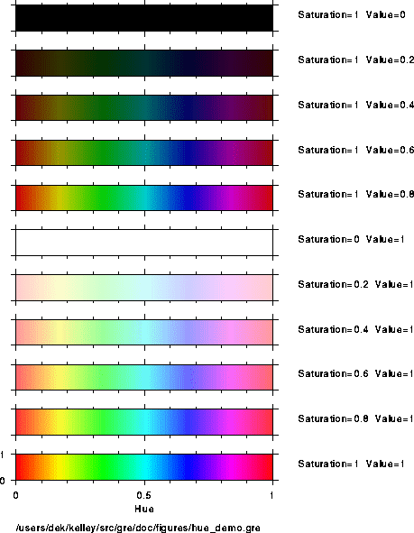
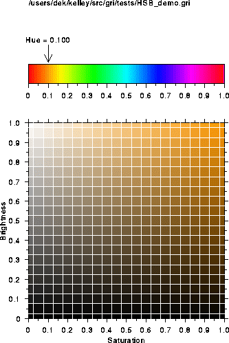
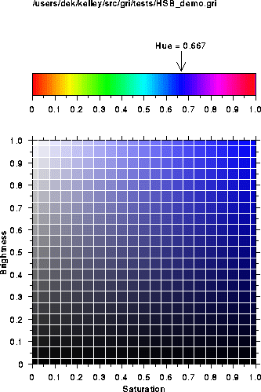

2: Invoking Gre
3: Gre Grammar
4: Commands
5: Cookbook
6: Hints
7: History
8: Plans
9: Concept Index
4: Commands in the `gre' language
About this chapter. This is the ``meat'' of the document (or
the ``tofu,'' if you prefer). Here you'll find out all the gory details
of the `gre' commands. You'll not need to read this chapter in detail
now, but you'll want to return to it often as you delve deeper into
`gre'. Recommendation: read the next section, ``cautionary
notes on syntax,'' (Cautionary Notes On Syntax) and then skip to
the cookbook chapter (Cookbook).
- Cautionary Notes On Syntax: How to read syntax
- Commands: List of commands
4.1: Cautionary Notes on Syntax
4.1.1: Wrap negative command arguments in parentheses
This is necessary because `gre' uses whitespace to separate
arguments to commands, but `gre' also insists on simplifying
mathematical expressions. Thus, when `gre' scans
set x axis -2 -3 -1; |
it will interpret the three numbers on the end as being part of a mathematical expression, and thus convert the command to
set x axis -6; |
(which will generate an error since it makes no sense in `gre'.)
To prevent the simplification, simply enclose negative arguments in parentheses, e.g.
set x axis (-2) (-3) (-1); |
Note: Astute users will realize that the first number need not be
enclosed in parentheses since there preceding item (the keyword
`axis') will not be construed as a component of a numerical
expression. Still, it's not a bad idea to develop the habit of
enclosing all all negative arguments in parentheses, as illustrated
above.
4.1.2: Command may not contain punctuation characters, e.g. `['.
Don't be fooled by the characters `{', `}', `[',
`]', and `|' in syntax descriptions. These characters are
used to indicate the general forms of syntax, not specific ways to write
`gre' code. Here are the meanings of the symbols: (1) optional
arguments are enclosed in square brackets (`[]'). (2) alternatives
are separated by vertical lines (`|'). (3) groups are enclosed in
braces (`{}').
In addition to the built-in commands listed below, you should also check
out the list of built-in subroutines see Mathematical subroutines,
since it many commands (e.g. `sin') are defined there also.
- Cd: Change directory
- Chop: Chop last character from $_ or string
- Chomp: Remove last character if it's newline
- Close: Close a file
- Cmd: Define a new Gre command
- Convert: Convert something (e.g. columns to grid)
- Delete: Delete something
- Die: Quit the program
- Draw: Draw something
- Exit: Exit program
- Glob: Do filename expansion
- Index: Index of substring in string
- Last: Jump out of a loop from the middle
- Ls: List contents of current directory
- My: Make a variable local to a block
- New Page: Start a new page of PostScript output
- Pscomment: Insert comment into PostScript file
- Open: Open data file
- Package: Set namespace
- Print: Print something
- Printf: Print something, formatted
- Pwd: Print current working directory
- Query: Ask question and receive reply
- Read: Read something
- Regress: Perform regression on column data
- Reorder: Reorder items (e.g. columns)
- Return: Return from subroutine
- Rewind: Rewind a datafile
- Set: Set something
- Split: Split string into substring array
- Sub: Create subroutine
- Substr: Extract substring
- System: Call the operating system
- Use: Use a module
- Warn: Print a warning
- -X: Various tests on files
4.3: `cd' command
cd; # style 1 cd $dir; # style 2 |
Style 1 --- change to home (top) directory.
Style 2 --- change to indicated directory, which may be provided in a double-quoted string or an expression which evaluates to a string.
Unix filenames are used, in the C-shell convention; thus `cd "~";'
moves to the home directory, and `cd "~/Mail";' moves to a unix
Mail directory at the home level.
chop # style 1 chop $VARIABLE # style 2 |
Style 1 ---
remove the last character from the `$_' string, returning
the character chopped.
Style 2 ---
Remove the last character from the string-value of the
indicated variable, returning the character chopped. This is often done
for lines read by the `<>' operator, and therefore it is often
assumed that the character will be a newline. For example here is how
you might slurp a whole file into a variable called `$a':
$a = "";
while (<>) {
chop;
$a = $a . $_;
}
|
You should be using `chomp' if you don't know for sure that the
last character will be a newline, or if there might be several newlines.
Neither will be the case as `<>' reads a file, provided that the
file has a newline at the very end, so `chop' will work most of the
time.
chomp # style 1 chomp $VARIABLE # style 2 |
A safer version of `chop', that only removes newlines from the end
of the variable `$_' or the indicated string-valued variable.
Returns the number of trailing newlines that were removed.
close close FILEHANDLE close(FILEHANDLE) |
Close data file with named file handle, the latter having been specified
in the `open' statement see Open. If no filehandle is
provided, closes an `ANONYMOUS' filehandle, i.e. corresponding to a
file which was opened without specifying a filehandle.
Once a file is closed, its contents may not be read unless it is opened again.
`close' returns 1 if the file was open and 0 if not.
4.7.1: `cmd' -- introduction
Syntax:
cmd WORDS (PROTOTYPE) {
COMMANDS
}
|
This creates a new Gre command. One or more words can be used in the
name of the command (denoted `WORDS' here). The `PROTOTYPE'
(see next paragraph) indicates the arguments to the command, with the
same syntax as in the Perl language. Above, `COMMANDS' stands for
a block of one or more commands within the curly braces. The command is
called by naming it, optionally with a space-separated list of arguments
(according to the prototype). These arguments are passed to the
`cmd' as the variables `$_[0]', `$_[1]', etc, and the
number of arguments that were supplied is `1 + $#_'. This
convention is just as in subroutines see Sub.
Example:
#* Print a morning greeting
cmd hi there sleepy head (;) {
print "Good morning sweetie\n";
}
hi there sleepy head;
|
Example 2:
#* Print twice a given number
#* @param $value number to be doubled and printed
cmd double ($;) { # $value
print 2 * $_[0], "\n";
}
double 10;
|
4.7.2: `cmd' prototypes and arguments
The arguments may be quoted strings, constants, or mathematical
expressions. These are the differences between `cmd' and
`sub': (1) a `cmd' may have more than one word in its name;
(2) a `cmd' does not return a value and therefore cannot be used in
a mathematical expression; and (3) parameters to a `cmd' are
separated by spaces, not by commas.
The PROTOTYPE is a list of zero or more characters indicating the
expected arguments to the command, in the same format as for Perl
`sub'-style subroutines. An example prototype is `$$', which
would indicate that the cmd takes two arguments. The allowed characters
in a prototype are dollar-sign (`$'), ampersand (`@'), and
semicolon (`;'). A semicolon is optional, and indicates a
separation between a list of required arguments and a list of optional
arguments. A dollarsign indicates a single scalar parameters (or
mathematical expression), and an ampersand indicate a list of one or
more scalars separated by spaces. Items before a semicolon are required
and items after a semicolon are optional.
Example:
cmd none () { # takes no arguments
cmd one only ($) { # takes a single argument
cmd two only ($$) { # takes two arguments
cmd two_three ($$;$) { # takes two or three arguments
cmd any number (@) { # takes any number of args (incl zero)
|
At compile-time, calls to a cmd are checked to ensure that they have the correct number of arguments.
Example:
none; # okay none 10; # error -- should be no arguments any number; # okay any number 1 1/10; # okay any number 1, 1/10; # error -- cannot use comma between arguments |
It is conventional to list argument names, if any, in a comment after the opening brace, e.g.
cmd display value of ($) { # $variable_name
print $_[0], "\n";
}
$pi = 2 * asin(1);
display value of $pi;
|
The `gre' scanner works by matching words it sees against known
commands, i.e. against builtin syntax such as `while' loops, etc,
and against a list of `cmd' defined in a system startup file and
possibly in a user-defined startup file named `~/.grerc' --
see User startup file. If it sees a match, then it considers all the
items following the matched words to be arguments. A special rule then
applies: bare words are treated as if they had been enclosed in
double-quote marks -- that is, they are treated as if they were text
strings. Thus, for example, the following two calls to the `cmd'
named `display' will have the same effect:
cmd display ($) { print $_[0]; }
display "hello";
display hello;
|
The purpose of this bare word convention is so that arguments may be keywords, as in the possible command
cmd draw stuff at ($$;$) { # $x $y [cm] ...
|
Commands may be nested -- you may call one command inside another, as illustrated in the test file.
Test file `tst-nested-cmd.gre':
4.7.3: `cmd' documentation
Gre also has a facility for formatting documentation for cmds. It
closely parallels the Java-language convention for documentation,
employing a block of comment lines occurring before the `cmd' line.
The purpose is so that gre-mode, an Emacs editing mode for Gre, may help
you to program in Gri. The rules for `cmd' documentation are:
- The block consists of comments that begin with `
#*' instead of the normal `#' character. - A block may not have any blank lines -- the block is recognized as
the list of `
#*' comment lines preceeding a `cmd' line. - At the bottom of the block, one may (optionally) document
individual parameters to the `
cmd', using keys called `@param' and `@default'. After the `@param' keyword, the name of the variable is given (with the dollar-sign specified). Any words after that are taken to be the documentation for the indicated variable. Optionally, one may also specify a default value with the `@default' keyword; for builtin commands, the default value is also stored in a builtin variable, and this may be listed after the actual value, separated by the word `in'.
Here is an example:
#* Indicate personal preference in foods.
#* @param $food_item the favorite food
cmd tastes good ($) { # $food_item
print "$_[0] tastes yummy!\n";
}
#* Indicate a more universal preference in foods.
#* @param $food_item the favorite food @default "apple pie"
cmd tastes really good (;$) { # $food_item
if ($#_ == 0) {
print "$_[0] tastes really yummy to everybody!\n";
} else {
print "apple pie tastes really yummy to everybody!\n";
}
}
tastes good "candy";
tastes really good;
tastes really good "candy";
|
Following these documentation conventions makes it easier for others to
read and understand your program. Furthermore, it allows the
`gre-mode' Emacs editing mode to parse your program better.
The `convert' commands are:
- Convert columns to grid: Create grid, for contouring
- Convert grid to image: Create image
4.9: `
convert columns to grid' command
convert columns to grid; # style 1 convert columns to grid barnes; # style 2 convert columns to grid barnes $xr $yr $gamma $iterations; # style 3 convert columns to grid neighbor; # style 4 |
Style 1-3 ---
Use the Barnes method of interpolation. Each point on the grid is
determined from the data using a distance-weighted gaussian averaging
procedure. The procedure is iterative, starting out at large smoothing
scales and moving to smaller scales gradually. It has the effect of
smoothing over gaps in the data while at the same time providing detail
in regions where data exist to constrain the interpolation. The
parameters `$xr', `$yr', `$gamma', and `$iterations'
determine the weighting function. If they are not provided, `$xr'
defaults to 1.4 times the range in x-values, divided by the square-root
of the number of non-missing data, `$yr' defaults to the
corresponding value in the y-direction, `$gamma' defaults to 0.5
and `$iterations' defaults to 2. For details of the algorithm, see
below.
Style 4 --- Use nearest-neighbors to calculate values at each point in the grid. This is done by scanning the (x,y,z) data from start to finish, assigning each to the grid point which is nearest. Nearness is measured as Cartesian distance, with scale factors in x and y being given by the spacing between the first and second grid points. In other words, distance is given by D=sqrt(dx*dx+dy*dy) where dx is ratio of distance from data point to nearest grid point, in x-units, divided by the difference between the first two elements of the x-grid, and dy is similarly defined. Once the grid point nearest the data point is determined, Gri adds the z-value to a list of possible values to store in the grid. Once the entire data set has been scanned, Gri then goes back to each grid point, and chooses the z-value of the data point that was nearest to the grid point -- that is, it stores the z value of the (x,y,z) data triplet which has minimal D value. Note that this scheme is independent of the order of the data within the columns.
Selecting a method:
The `barnes' method is preferred (that's why it's the default). It
generally produces fields that are close to what a human would draw. A
real advantage is that in regions with no data, the contour lines are
smooth (being based on averaging over large scales), while in regions
with data the contour lines will become more detailed, as appropriate
(since then the local data will alter the grid).
The `neighbor' method is much faster than the `barnes' method,
but is really only useful when the data are already pre-gridded -- i.e.
when the (x,y,z) triplets have x and y values which are already aligned
with the grid.
Performance considerations:
For `P' data points, `X' x-grid points, and `Y' y-grid
points, the `neighbor' calculation cost is proportional to
`P*[log2(X)+log2(Y)]' where `log2' is logarithm base 2. The
`barnes' cost is much higher, with each iteration cost being
proportional to `P*X*Y)'. For small datasets (e.g. a few thousand
points) the difference is trivial, but for large datasets the
`barnes' method is quite slow. It should be noted that
`gre' makes every effort at efficiency. For example, the
exponential function is expensive to calculate, so `gre' uses a
fifth-order polynomial approximation; this speeds executation by a
factor of 3, incurring difference of less than 1/10-th of a percent on
the grid values.
References: (1) Section 3.6 in Roger Daley, 1991, ``Atmospheric data analysis,'' Cambridge Press, New York. (2) S. E. Koch and M. DesJardins and P. J. Kocin, 1983. ``An interactive Barnes objective map anlaysis scheme for use with satellite and conventional data,'', J. Climate Appl. Met., vol 22, p. 1487-1503.
Details of Barnes method:
@tex The gridded field is estimated iteratively. Successive iterations retain largescale features from previous iterations, while adding details at smaller scales.
The first estimate of the gridded field, here denoted $G_{ij}^{(0)}$ (the parenthetic superscript indicating the order of the iteration) is given by a weighted sum of the input data, with $z_k$ denoting the k-th $z$ value.
$$ G_{ij}^{(0)} = { {\sum_1^{n_k} W_{ijk}^{(0)} z_k} \over {\sum_1^{n_k} W_{ijk}^{(0)}} } $$
The weights $W_{ijk}^{(0)}$ are defined in terms of a Guassian function decaying with distance from observation point to grid point:
$$ W_{ijk}^{(0)} = \exp \left[ - { {(x_k-X_i)^2} \over {L_x^2} } - { {(y_k-Y_j)^2} \over {L_y^2} } \right] $$
\noindent Here $L_x$ and $L_y$ are lengths which define the smallest $(x,y)$ scales over which the gridded field will have significant variations (for details of the spectral response see Koch et al. 1983).
Note: if the user has supplied weights see Read columns, then these are multiplied into the normal distance-based weights; i.e. $w_i W_{ijk}$ is used instead of $W_{ijk}$.
The second iteration derives a grid $G_{ij}^{(1)}$ in terms of the first grid $G_{ij}^{(0)}$ and ``analysis values'' $f_k^{(0)}$ calculated at the $(x_k,y_k)$ using a formula analogous to the above. (Interpolation based on the first estimate of the grid $G_{ij}^{(0)}$ can also be used to calculate $f_k^{(0)}$, with equivalent results for a grid of sufficiently fine mesh.) In this iteration, however, the weighted average is based on the difference between the data and the gridded field, so that no further adjustment of the gridded field is done in regions where it is already close to through the observed values. The second estimate of the gridded field is given by
$$ G_{ij}^{(1)} = G_{ij}^{(0)} + { {\sum_1^{n_k} W_{ijk}^{(1)} (f_k - f_k^{(0)})} \over {\sum_1^{n_k} W_{ijk}^{(1)}} } $$
\noindent where the weights $w_{ik,1}$ are defined by analogy with $W_{ik}^{(0)}$ except that $L_x$ and $L_y$ are replaced by $\gamma^{1/2}L_x$ and $\gamma^{1/2}L_y$. The nondimensional parameter $\gamma$ ($0<\gamma<1$) controls the degree to which the focus is improved on the second iteration. Just as the weighting function forced the gridded field to be smooth over scales smaller than $L_x$ and $L_y$ on the first iteration, so it forces the second estimate of the gridded field to be smooth over the smaller scales $\gamma^{1/2}L_x$ and $\gamma^{1/2}L_y$.
The first iteration yields a gridded field which represents the observations over scales larger than $(L_x,L_y)$, while successive iterations fill in details at smaller scales, without greatly modifying the larger scale field.
In principle, the iterative process may be continued an arbitrary number of times, each time reducing the scale of variation in the gridded field by the factor $\gamma^{1/2}$. Koch et al. 1983 suggest that there is little utility in performing more than two iterations, providing an appropriate choice of the focussing parameter $\gamma$ has been made. Thus the gridding procedure defines a gridded field based on three tunable parameters: $(L_x,L_y,\gamma)$.
@end tex
The gridded field is estimated iteratively. Successive iterations retain largescale features from previous iterations, while adding details at smaller scales.
The first estimate of the gridded field, here denoted
`G_(ij)^0' (the superscript indicating the order of the
iteration) is given by a weighted sum of the input data, with
`z_k' denoting the k-th `z' value.
sum_1^n W_(ijk)^0 z_k
G_(ij)^(0) = ----------------------
sum_1^n W_(ijk)0
|
where the notation `sum_1^n' means to sum the elements
for the `k' index ranging from 1 to `n'.
The weights `W_(ijk)^0' are defined in terms of a Guassian
function decaying with distance from observation point to grid point:
( (x_k - X_i)^2 (y_k - Y_j)^2 )
W_(ijk)^0 = exp(- -------------- - --------------- )
( L_x^2 L_y^2 )
|
Here `L_x' and `L_y' are lengths which define the smallest
`(x,y)' scales over which the gridded field will have significant
variations (for details of the spectral response see Koch et al. 1983).
Note: if the user has supplied weights see Read columns, then these
are applied in addition to the distance-based weights. That is,
`w_i W_(ijk)' is used instead of `W_(ijk)'.
The second iteration derives a grid `G_(ij)^1' in terms of the
first grid `G_(ij)^0' and ``analysis values'' `f_k^0'
calculated at the `(x_k,y_k)' using a formula analogous to that
above. (Interpolation based on the first estimate of the grid
`G_(ij)^0' can also be used to calculate `f_k^0', with
equivalent results for a grid of sufficiently fine mesh.) In this
iteration, however, the weighted average is based on the difference
between the data and the gridded field, so that no further adjustment
of the gridded field is done in regions where it is already close to
through the observed values. The second estimate of the gridded field
is given by
sum_1^n W_(ijk)^1 (f_k - f_k^0)
G_(ij)^1 = G_(ij)^0 + -------------------------------
sum_1^n W_(ijk)^1
|
where the weights `w_{ik,1}' are defined by analogy
with `W_{ik}^0' except that `L_x' and `L_y' are
replaced by `gamma^{1/2}L_x' and `gamma^{1/2}L_y'. The
nondimensional parameter `gamma' (`0<gamma<1') controls the
degree to which the focus is improved on the second iteration. Just
as the weighting function forced the gridded field to be smooth over
scales smaller than `L_x' and `L_y' on the first iteration,
so it forces the second estimate of the gridded field to be smooth
over the smaller scales `gamma^{1/2}L_x' and
`gamma^{1/2}L_y'.
The first iteration yields a gridded field which represents the
observations over scales larger than `(L_x,L_y)', while successive
iterations fill in details at smaller scales, without greatly
modifying the larger scale field.
In principle, the iterative process may be continued an arbitrary number
of times, each time reducing the scale of variation in the gridded field
by the factor `gamma^{1/2}'. Koch et al. 1983 suggest that there
is little utility in performing more than two iterations, providing an
appropriate choice of the focussing parameter `gamma' has been made.
Thus the gridding procedure defines a gridded field based on three
tunable parameters: `(L_x,L_y,gamma)'.
4.10: `
convert grid to image' command
BUG -- COMMAND NOT IMPLEMENTED YET
convert grid to image; # style 1 convert grid to image size $w $h; # style 2 |
Style 1 ---
Convert grid to an image that is 128 by 128 pixels. If the image range
has not been set by `set image range' see Set image range,
define it to be the range of the grid.
Style 2 ---
The width is specified to be `$w' pixels wide and `$h' pixels
high.
Interpolation method: The interpolation scheme is the same used for contouring. Image points that lie outside the grid domain are considered missing. For points within the grid, the first step is to locate the patch of the grid upon which the pixel lies. Then the 4 neighboring grid points are examined, and one of the following cases holds.
- If 3 or more of them are missing, the pixel is considered missing.
- If just one of the neighboring grid points is missing, then the image pixel value is determined by bilinear interpolation on the remaining 3 non-missing grid points. (This amounts to fitting a plane to three measurements of height.)
- If all 4 of the grid points are non-missing, then the rectangle defined by the grid patch is subdivided into four triangles. The triangles are defined by the two diagonal lines joining opposite corners of the rectangle. An ``image point'' is constructed at the center of the grid patch, with f(x,y) value taken to be the average of the values of the four neighbors. This value is taken to be the value at the common vertex of the four triangles, and then bilinear interpolation is used to calculate the image pixel value.
With the `size' options `$width' and `$height'
specified, they set the number of rectanglular patches in the image.
With the `box' options specified, they set the bounding box for the
image. If `box' is not given, the image spans the same bounding
box as the grid as set by `set x grid' and `set y grid'.
Normally, missing values in the grid become white in the image, but this
can be changed using the `set image missing value color to'...
command.
delete columns randomly $fraction; # style 1 delete columns where missing; # style 2 delete grid; # style 3 delete [x|y] scale; # style 4 |
Style 1 --- delete indicated fraction (from 0 to 1) of the column data. This is sometimes done to make datasets smaller and sometimes done for monte-carlo analysis of data.
Style 2 ---
delete column data which have any one of the variables missing. Thus,
if an (x,y) pair has `x' missing, delete the whole pair; if a
(x,y,u,v) quadruplet has `u' mising, delete that quadruplet.
Style 3 --- delete grid data
Style 4 ---
delete either `x' scale, or `y' scale, as indicated. This is
used to autoscale multiple datasets, one after another, since if the
scale is deleted a new one will be created upon reading a dataset with
`read columns'. If neither `x' nor `y' is indicated,
delete both scales.
die # style 1 die "a message to be printed"' # style 2 die EXPR # style 3 |
`die' quits the program, optionally printing a message or value.
Formally, `die' is a subroutine, so it may be used in any
expression. However, it never returns a value if it is executed, since
it terminates program execution.
Style 1 ---
print a message of the form `Died at a.gre line 5.', where e.g.
`a.gre' is the commandfile and the `die' command was on the
fifth line. Then exit from `gre'.
Style 2 ---
print the indicated text string. If the string ends in a newline
character (e.g. `die "Cannot locate file\n";') then the string is
printed, with the newline, and then `@code{gre'} exits. If a newline
character is not present at the end of the string, then the string is
printed, followed by an indication of the name of the commandfile and
the line number (as in Style 1). Since this information is helpful,
most users leave out the newline.
Style 3 --- print the value of the indicated expression, followed by a newline, and then exit.
It is a good idea to use `die' liberally to check for conditions
that could lead to problems. A common example is to test that a file
has been opened correctly. Following are some ways to do that.
# Next three produce (the same) minimal error message ...
open(IN, "file.dat") or die;
die if !open(IN, "file.dat");
if !open(IN, "file.dat") { die; }
# ... next three produce (the same) more informative message
open(IN, "file.dat") or die "Cannot open file.dat";
die "Cannot open file.dat" if !open(IN, "file.dat");
if !open(IN, "file.dat") { die "Cannot open file.dat"; }
|
The `draw' commands are used to draw various items. Parameters for
the various items (e.g. linewidth, for `draw curve') are set by
related `set' commands.
Each `draw' command checks to see whether axes have been drawn
already, and it will draw them if not. It will also draw axes if the
existing axes correspond to different scales. For example, if the
x-margin had been changed since the last axes were drawn, `gre'
will draw the appropriate new axes as well. To prevent drawing axes,
you may do `draw axes none' before any other draw commands.
- Draw arc: Draw a portion of a circle
- Draw arrow: Draw arrow between two points
- Draw arrows: Draw (u,v) arrows at (x,y) locations
- Draw axes: Draw axes
- Draw box: Draw a rectangular box
- Draw contour: Draw contour(s)
- Draw curve: Draw curve through x-y points
- Draw grid: Draw contour grid
- Draw image: Draw color or black/white image
- Draw isopycnal: Draw curve of constant seawater density
- Draw label: Draw text
- Draw line from: Draw line segment between 2 points
- Draw polygon: Draw a polygon, possibly filled
- Draw symbol: Draw symbol at point or at column data
- Draw title: Draw title above plot
- Draw x axis: Draw an x-axis
- Draw x box plot at: Draw a horizontal Tukey box plot
- Draw y axis: Draw a y-axis
- Draw y box plot at: Draw a vertical Tukey box plot
4.13.1: `draw arc' command
draw arc [filled] $xc $yc $r $angle1 $angle2; |
Draw an arc (i.e. a fraction of a circle), with the current pen color
and current linewidth. The center of the circle is at
(`$xc',`$yc'), a coordinate specified in centimeters on the
page. The circle radius is `$r' centimeters. The drawing starts
at an angle of `$angle1' degrees counterclockwise from "east" (the
line of the positive x-axis) on the page, and stops at angle
`$angle2'.
For example, to draw the top half of a circle centered at (5cm,5cm),
with radius 1cm, use `draw arc 5 5 1 0 180'.
If the `filled' keyword is given, the arc is filled. That makes
sense mostly for circles.
draw arrow from $x0 $y0 to $x1 $y1 [cm]; |
Draw an arrow between the two indicated points, pointing towards
(`$x1',`$y1'). If the keyword `cm' is not given, the
points are in user-coordinates. If `cm' is given, the coordinates
are in centimeters on the page.
draw arrows; |
Draw a vector field consisting of arrows emanating from the coordinates
stored in the (x, y) columns. The lengths and orientations of the
arrows are stored in the (u, v) columns, and the scale for the (u,v)
columns is set by the commands `set u scale' see Set u scale, and
`set v scale' see Set v scale. By default the
arrowheads are all of halfwidth 0.2 cm, but this may be changed, or the
arrowhead width may be made proportional to arrow length, by the command
`set arrow size' see Set arrow size.
NB To get a single arrow, instead use `draw arrow' see Draw arrow.
draw axes; # style 1 draw axes none; # style 2 draw axes 0; # style 3 draw axes 1; # style 4 draw axes 2; # style 5 draw axes frame; # style 6 |
Style 1 --- draw x and y axes using the margins, scales, etc., presently active.
Style 2 ---
draw no axes, but trick future `draw' commands into
thinking they have been drawn.
Style 3 --- draw x-y axes frame labelled at left and bottom
Style 4 --- draw axes without tics at top and right
Style 5 --- draw axes frame with no tics or labels
Style 6 --- same as Style 5
draw box [filled] $ll_x $ll_y $ur_x $ur_y [cm] |
Draw rectangular box connecting the given coordinates of the lower-left
corner (`$ll_x', `$ll_y') and upper-right corner
(`$ur_x', `$ur_y'). If the `filled' keyword is given,
the rectangle is filled with the current color of the pen; otherwise
only the outline is drawn. If the `cm' keyword is given, the
coordinates are taken to mean centimeters on the page; otherwise they
are taken to be in user-coordinates. If user-coordinates are employed,
then axes will be drawn automatically, if they haven't already been
drawn.
4.13.6: `
draw contour' command
draw contour # style 1 draw contour $c # style 2a draw contour $c unlabelled # style 2b draw contour $c labelled $lab # style 2c draw contour $min $max $inc # style 3a draw contour $min $max $inc unlabelled # style 3b draw contour $min $max $inc $inc_unlabelled # style 4a draw contour $min $max $inc $inc_unlabelled unlabelled # style 4b |
Draw contour(s) of gridded data.
Style 1 --- draw contours at an interval and over a range that is selected automatically from scanning the grid data
Style 2 --- draw a single contour, which is labelled with its numerical value by default, but which may also be unlabelled, or labelled with an arbitrary text string
Style 3 ---
draw contours for values ranging from `$min' to
`$max', stepping by `$inc'. In style (3a), numerical labels
are drawn on each contour line. In style 3b, the contours are
unlabelled.
Style 4 ---
draw contours for values ranging from `$min' to
`$max', stepping by `$inc_unlabelled'. In style (4a),
numerical labels are drawn on only those contour lines at the interval
`$inc', with intervening contours being unlabelled. In style 4b,
none of the contours are unlabelled.
draw curve; # style 1 draw curve overlying; # style 2 draw curve filled; # style 3 draw curve filled to x $xvalue; # style 4 draw curve filled to y $yvalue; # style 5 |
Style 1 --- draw curve, with line segments between each pair of (x,y) data, ignoring any pairs in which either x or y is missing. (Axes are drawn first, if they are required.)
Style 2 --- as style 1, but first set pen color to white and draw a wider curve; this makes it easier to discern one curve drawn on top of another
Style 3 --- draw the curve, filling in the region defined by the curve (connecting first and last points)
Style 4 ---
draw the curve, filling in to the indicated value of x. A
common value for `$xvalue' is zero, yielding a curve filled to the
x-axis ... although the `draw curve filled to y' form is used much
more than this one.
Style 5 ---
draw the curve, filling in to the indicated value of y. A
common value for `$yvalue' is zero, yielding a curve filled to the
y-axis.
draw grid; |
Draw plus-signs at locations where grid data are non-missing.
draw image; |
set image colorscale' see Set image colorscale.
4.13.10: `
draw isopycnal' command
draw isopycnal $density [$P_sigma [$P_theta]] # style 1 draw isopycnal unlabelled $density [$P_sigma [$P_theta]] # style 2 |
Draw isopycnal curve, with or without label. This curve is the locus of temperature and salinity values which yield seawater of the indicated density, at the indicated pressure. The UNESCO equation of state is used.
For the results to make sense, the x-axis should be salinity and the y-axis should be either in-situ temperature or potential temperature.
The `$density' unit is kg/m^3. If the supplied value exceeds 100
then it will be taken to indicate the actual density; otherwise it will
be taken to indicate density minus 1000 kg/m^3. (The deciding value of
100 kg/m^3 was chosen since water never has this density; the more
intuitive value of 1000 kg/m^3 would be inappropriate since water can
have that density at some temperatures.) Thus, 1020 and 20 each
correspond to an actual density of 1020 kg/m^3.
The reference pressure for density, `$P_sigma', is in decibars
(roughly corresponding to meters of water depth). If no value is
supplied, a pressure of 0 dbar (i.e. atmospheric pressure) is used.
The reference pressure for theta, `$P_theta', is in decibars, and
defaults to zero (i.e. atmospheric pressure) if not supplied. This
option is used if the y-axis is potential temperature referenced to a
pressure other than the surface. Normally the potential temperature is,
however, referenced to the surface, so that specifying a value for
`$P_theta'' is uncommon.
By default, labels will be drawn on the isopycnal curve; this may be
prevented by supplying the keyword `unlabelled'. If labels are
drawn, they will be of order 1000, or of order 10 to 30, according to
the value of `$density' supplied (see above). The label format
defaults to `"%g"' in the C-language format notation, and may be
controlled by `set contour format'. The label position may be
controlled by `set contour label position' command (bug: only
non-centered style works). Setting label position is useful if labels
collide with data points. Labels are drawn in the whiteunder mode, so
they can white-out data below. For this reason it is common to draw
data points after drawing isopycnals.
If the y-axis is in-situ temperature, the command should be called
without specifying `$P_sigma', or, equivalently, with
`$P_sigma = 0'.
That is, the resultant curve will correspond to the (S,T) solution to the equation
$density = RHO(S, T, 0) |
RHO=RHO(S,T,p)'' is the UNESCO equation of state for
seawater. This is a curve of constant sigma_T.
If the y-axis is potential temperature referenced to the surface,
`$P_theta' should not be specified, or should be specified to be
zero. The resultant curve corresponds to a constant value of potential
density referenced to pressure `$P_sigma', i.e. the (S,theta)
solution to the equation
$density = RHO(S, theta, $P_sigma) |
$P_sigma=0' (the default), the result is a curve
of constant sigma_theta.
If the y-axis is potential temperature referenced to some pressure other
than that at the surface, `$P_theta' should be supplied. The
resultant curve will be the (S,theta) solution to the equation
$density = RHO(S, T', $P_sigma) |
T'=THETA(S, theta, $P_theta, $P_sigma) |
THETA=THETA(S,T,P,Pref)' is the UNESCO formula for potential
temperature of a water-parcel moved to a reference pressure of
`Pref'. Note that `theta', potential temperature referenced
to pressure ``$P_theta', is the variable assumed to exist on the
y-axis.
draw label $label [centered|rightjustified|whiteunder] at $x $y [cm] [rotated $deg]; |
Draw text string, stored in `$label' (a double-quoted or
string-valued expression), at the indicated location. The location may
be in user coordinates (default) or centimeters on the page (if keyword
`cm' is given).
The text is normally left-justified, but may be centered or
right-justified by use of the keyword `centered' or
`rightjustified'.
The keyword `whiteunder' indicates that a white underlay box should
be drawn under the text -- this makes labels stand out over non-white
backgrounds.
The text is normally written horizontally, but may be written at an
angle if the keyword `rotated' is present, along with an angle
(`$deg') measured in degrees counterclockwise of horizontal.
4.13.12: `
draw line from' command
draw line from $x0 $y0 to $x1 $y1 [cm]; |
Draw line connecting (`$x0',`$y0') and
(`$x1',`$y1'), each specified in the user coordinate system.
4.13.13: `
draw polygon' command
draw polygon [filled] ... [cm]; |
Draw polygon connecting a list of pairs of points. Normally the polygon
is not filled, and the points are specified in user coordinates, but the
keywords indicated above may be used to cause `gre' to fill the
polygon, or to interpret the coordinates as being in centimeters on the
page.
4.13.14: `
draw symbol' command
draw symbol; # style 1 draw symbol $type; # style 2 draw symbol $type at $x $y; # style 3 draw symbol $type at $x $y [cm]; # style 4 |
Style 1 ---
draw a bullet-type symbol at each (`$x',`$y') in the
column data.
Style 2 --- as style 1, but use indicated symbol type (see table below).
Style 3 --- draw indicated symbol type at indicate user coordinate.
Style 4 --- draw indicated symbol type at indicate coordinate on the page.
Symbols may be specified with a number or a name from the list below.
NUMBER NAME
------ ------------------
0 "plus"
1 "times"
2 "box"
3 "circ"
4 "diamond"
5 "triangleup"
6 "triangleright"
7 "triangledown"
8 "triangleleft"
9 "asterisk"
10 "star"
11 "filledbox"
12 "bullet"
13 "filleddiamond"
14 "filledtriangleup"
15 "filledtriangleright"
16 "filledtriangledown"
17 "filledtriangleleft"
|
For an example see Example 1 and Example 3.
draw title $title; |
Draw title above plot. `$title', a double-quoted string or
expression evaluating to a string, is the text to be used for the title.
Hint: to get a title which indicates the commandfile used to create the graph and the date on which it was created, use:
draw title "`pwd`/$_command_file (`date`)"; |
draw x axis [at bottom|top|{$y [cm]} [lower|upper]];
|
Draw an x-axis, optionally at a specified location and of a specified style.
The location may be specified by the words `bottom' or `top',
or by specifying the desired y-location (either in user-units, or, if
the keyword `cm' is present, in centimeters on the page). The
`bottom' and `top' styles result in the labels going below and
above the axis, respectively (appropriate for axes at bottom and top of
an axis frame). If the location is specified, however, the labels are
drawn below the axis, unless the trailing keyword `upper' is
specified. In general, the trailing optional keywords `lower' and
`upper' allow one to specify that labels should appear below the
axis or above it, respectively.
4.16: `
draw x box plot at' command
draw x box plot at $y [size $cm]; |
Draw a Tukey box plot horizontally, indicating graphically the statistical properties of the x-column. They are in the form of horizontally-oriented box with line segments (``whiskers'') hanging off opposite ends. Somewhere within the box is a vertical line indicating the median x-value. The ends of the boxes indicate the first and third quartiles of the x-values, q1 and q3. The value of q3 minus q1 is called the inter-quartile range. The whiskers (i.e., the lines with crosses at the end) extend from q1 and q3 to the furthest data points which are still within a distance of 1.5 inter-quartile ranges from q1 and q3. Beyond the whiskers, all outliers are shown: open circles are used for data within a distance of 3 inter-quartile ranges beyond q1 and q3, and in closed circles beyond that.
draw y axis [at left|right|{$x [cm]} [left|right]];
|
Draw a y-axis, optionally at a specified location and of a specified style.
The location may be specified by the words `left' or `right',
or by specifying the desired x-location (either in user-units, or, if
the keyword `cm' is present, in centimeters on the page). The
`left' and `right' styles result in the labels going to the
left of and the right of the axis, respectively (appropriate for axes at
left and right of an axis frame). If the location is specified,
however, the labels are drawn to the left of the axis, unless the
trailing keyword `right' is specified. In general, the trailing
optional keywords `left' and `right' allow one to specify that
labels should appear to the left of the axis or the the right of it,
respectively.
4.18: `
draw y box plot at' command
draw y box plot at $x [size $cm]; |
Draw a Tukey box plot vertically, indicating graphically the statistical properties of the y-column. They are in the form of vertically-oriented box with line segments (``whiskers'') hanging off opposite ends. Somewhere within the box is a horizontal line indicating the median y-value. The ends of the boxes indicate the first and third quartiles of the y-values, q1 and q3. The value of q3 minus q1 is called the inter-quartile range. The whiskers (i.e., the lines with crosses at the end) extend from q1 and q3 to the furthest data points which are still within a distance of 1.5 inter-quartile ranges from q1 and q3. Beyond the whiskers, all outliers are shown: open circles are used for data within a distance of 3 inter-quartile ranges beyond q1 and q3, and in closed circles beyond that.
exit EXPR |
Exit the program. On operating systems which permit exit codes, this exits with an exit code given by the integer part of the indicated expression.
The expression should be numerical, not textual. Expressions that can
be recognized as textual at compile-time (e.g. quoted strings) result in
compilation errors. Expressions that are determined to be textual at
run-time are converted to numerical values in the usual way -- if the
string would be read as a number by a human, `gre' will use that
numerical value.
glob(EXPR) |
Return a list of filenames that result from expanding `EXPR', which
is either a double-quoted string or a string-valued expression. For
example, to print a list of files ending in `.gre', you could do:
foreach $f (glob("*.gre")) {
print "$f\n";
}
|
index(STR, SUBSTR) index(STR, SUBSTR, OFFSET) |
Return position of string `SUBSTR' within source string `STR',
measured by the offset from the start of `STR'. If `OFFSET'
is provided, the search commences at `OFFSET' characters from the
start of `STR'. A negative or zero value for `OFFSET' means
to begin searching at the start of `STR', just as if no
`OFFSET' were given. If `OFFSET' is greater than the length
of `STR', or if `SUBSTR' is not found, the value `-1' is
returned.
Awk users should note that the returned offset starts at zero, not at one.
For example, the following code indicates that the substring is found at offsets of 2, 12, and 22.
Example:
$str = "a rose is a rose is a rose";
$substr = "rose";
$off = -1; # start at beginning
while (-1 != ($off = index($str, $substr, $off))) {
print "'$substr' found in '$str' at offset $off\n";
$off++; # move past
}
|
last; |
Jump out of the enclosing loop, landing just after the end of the loop.
Almost always this is associated with an `if' statement of some
form, e.g.
# some code to define a vector $x[0], $x[1], ... $x[$n-1].
for ($i = 0; $i < $n; $i += 1) {
last if ($x[$i] < 0);
}
print "Index of first negative x is $i\n";
|
(The `last' command in `gre' acts in a similar way to that
in Perl, except that one cannot jump to a named location as one can, as
an option, in Perl. C users will recognize that `last' in `gre'
works just like break in C.)
ls; # style 1 ls $dir; # style 2 |
Style 1 --- list files in current directory.
Style 2 ---
list files in the directory named `$dir'.
C-shell unix conventions are used in the directory name see Cd.
The current directory can be printed by `pwd' and can be set by
`cd'.
my $scalar; # style 1a my $scalar1, $scalar2; # style 1b my ($scalar1, $scalar2); # style 1c my $scalar = EXPRESSION; # style 2 my @array; # style 3 |
Make indicated scalar or vector variable local to the enclosing block of code. (A block is a list of commands inside curly braces, such as a part of an if statement, a loop, or a cmd.)
Upon exit from the block, the previous value of the variable (if there was one) is recovered.
Style 1 --- the scalar variable/variables is/are initialized to numerical value of zero and string value of an empty string. Any number of scalars may be given, separated by commas and optionally enclosed in parentheses.
Style 2 --- the scalar variable is assigned the value of the indicated expression. BUG: Perl users should note that this only works for the case in which single scalars are named. This is more readible anyway.
Style 3 --- the vector variable is created but has no content unless you assign to it in the normal way
Finish the present page, and start a new page. All settings (of linewidth, axes, landscape/portrait, etc) are retained on the new page.
pscomment expr; |
Insert the result of executing the indicated expression as a comment in
the PostScript file. Normally, `expr' is a double-quoted string.
This command is mostly used by the `gre' developer.
open(FILEHANDLE, $name) # style 1 open($name) # style 2 open $name # style 3 open WORD # style 4 |
In the first form, open file with indicated handle and name, for later
reading/writing by various `read' commands see Read.
`$name' is the filename, either in a double-quoted string or in a
string-valued expression, e.g.
open(IN, "in.dat") or die "Cannot open in.dat\n"; |
$f = "in.dat"; open(IN, "in.dat") or die "Cannot open in.dat\n"; |
Forms 2 and 3 illustrate that the filename expression need not be
enclosed in parentheses if the file handle is not given. Style 4
indicates that quotes are not required on the filename. The `WORD'
in Style 4 stands for text that is not enclosed in quotes; this text may
contain periods and underlines (but not spaces or commas, or
mathematical operators)
Example:
open "in.dat" or die "Cannot open in.dat\n"; |
In the forms (2-4) in which a file handle is not supplied, the file is
opened with default handle `"ANONYMOUS"'. This is the default
handlename in `read' commands if no handle is supplied
see Read.
`open' is a function which returns `1' if the file can be
opened and `0' otherwise. It's a good idea to check the return
value, as in:
open(IN, "in.dat") || die "Cannot open in.dat.\n"; |
The FILEHANDLE must be a bare word, without quotes. In particular, it may not be a variable name. Furthermore, the handle name may not contain any lower-case letters. (Perl users will note that this is also recommended in Perl, but not required there.)
Normally the file is open for input only -- writing is not permitted on
such a file. But if the filename as given begins with the greater-than
character (`>') then that character is skipped, and the resultant
filename is opened for output only. If the filename begins with the
less-than character (`<') then the indicated file is opened for
reading only -- but this leading character is not required since it is
the default.
Pipes: If the last character in the filename is `|', then
the name is interpreted as a command to pass to the operating system,
and input will be from the result of this command. (This option is not
compatible with the `<' and `>' options of last paragraph.)
For example, to only work on the first 10 lines of a file you might do
open(IN, "head -10 in.dat |") or die "Cannot open\n"; |
If you wish to send a dollarsign to the operating system, you must
protect it with a backslash so that `gre' doesn't try to interpolate
it as a variable. For example, the following makes `IN' contain
two columns, that `awk' has extracted from the first and tenth
columns from the file `in.dat'
open(IN, "awk '{print \$1,\$10}' in.dat |");
|
Web-delivered files: If the filename begins with `http://',
`ftp://', or `file://', then the file is considered to be a
web address, and the operating-system command `lynx' is used to get
a copy of the file. For example:
Compressed files: If the filename ends in `.Z', then it will
first be uncompressed with the unix `uncompress' program. If the
filename ends in `.gz', it will first be uncompressed with the GNU
`gunzip' program.
$url = "file://www.phys.ocean.dal.ca/~kelley/gri/examples/example1.dat"; open(IN, $url) or die "Cannot open the URL $url"; read columns x=1 y=2; draw curve; |
For pipe-accessed and web-accessed files, the input comes from a
temporary file that is erased exit time. (Running `gre' with the flag
`-d 4' will reveal what system command is used, and where the
temporary file is put.
package NAMESPACE |
Set namespace to `NAMESPACE', as in Perl. This is often used
inside of modules, which are called with the `use' command
see Use.
BUG: This documentation is not complete
BUG: This does not work yet (98-dec-21, version 0.1.17)
There are several varieties of `print' command.
print # 1 print FILEHANDLE # 2 print ITEMS # 3 print FILEHANDLE ITEMS # 4 print variables # 5 print columns # 6 print grid # 7 print image # 8 |
With no file handle specified, output is to the standard output file
(also available as the handle `STDOUT'). If a file handle is
specified, a check is first done that the file was opened as an output
file -- if not, an error results.
`ITEMS' is a comma-separated list of items.
-
Forms 1 and 2: with no mention of the item to print, causes
`
gre' to print the value of the variable `$_'. This is most often used in the Perl-like syntax, in which `$_' will have been defined by a file input in a `while' statement. For an example, see While and Until. -
Style 3-4 --- (`
print ... ITEMS'): print a comma-separated list of items, each of which may be a variable name, a numerical expression, or a string, e.g.$i = 0; print $i, " ", $i + 1, "\n";
This produces the output `
0 1' followed by a newline. The newline is indicated by the character sequence `\n', just as it is in C-like languages. Similarly, `\t' indicates a tab.Note that no space is printed between numeric items (such as the variable names in this example), and that a newline is not printed unless you tell it to be printed.
-
Style 5 --- `
print variables': print a list of all existing variables. This is quite useful for learning about `gre', but seldom is used in real programs. BUG: this command produces inaccurate results for 'my' variables'. (Note to author: I'll fix this by (1) allowing variables to be 'hidden', and hiding them instead of unnaming them, when they go out of scope and then (2) storing a wnode-list of currently-unhidden variable indices in a tree associated with the command. This affects parser.y/reduce_block_level, parser.h/erase_name.) -
Style 6 --- `
print columns': print list of column data, normally as created by the command `read columns' see Read columns. This is quite useful in developing and debugging `gre' programs. -
Style 7 --- `
print grid': print information about the current grid. -
Style 8 --- `
print image': print information about the current image.
printf FORMAT, LIST; # style 1 printf FILEHANDLE FORMAT, LIST; # style 2 |
Style 1 --- print to STDOUT the items in the comma-separated list, using the indicated format (see below).
Style 2 --- as style 1, but print to named filehandle.
There are several varieties of `printf' command, which is used to
print formatted information to a file (or to the standard output I/O
stream). To save the results into a string, instead of printing them,
use `sprintf' see Printing Into Strings.
The format is in the style of the C language (also used by many other
languages, such as perl). Special tags are used in the format to
indicate how to print the information stored in each of the items in the
list. There is normally one tag for each item in the list; if the list
is exhausted before the tags are used up, then the tags are considered
to be normal text and are simply reproduced. All items that are not
tags are simply reproduced exactly, with the special escape codes
`\n' and `\t' being used to indicate newlines and tabs,
respectively.
Formatting tags begin with the character `%' and end with a single
character telling the type of the item. In between there may be
optional indicators for the field width and, for floating point items,
the number of decimal places to use.
The tag `%s' is used for textual items. The tags `%f',
`%g' and `%e' for floating-point numerical items. The tag
`%d' is used for integral numerical items; when it is used, only
the integer part of the item is printed.
Each of the tag types accepts an optional field-width designator, given
in an integer that may follow the `%' character. The three
floating-point tags may also have an additional designator for number of
decimal places, given after a period between the `%' and the
`f', `g' or `e'.
Examples:
printf "%f\n", 1/9; # prints 0.111111 printf "%.2f\n", 1/9; # prints 0.11 printf "%10.2f\n", 1/9; # prints 0.11 printf "%.2g\n", 1/9; # prints 0.11 printf "%e\n", 1/9; # prints 1.111111e-01 printf "%.2e\n", 1/9; # prints 1.11e-01 |
pwd; |
Print current working directory, as set by `cd'.
query $var; # style 1 query $var "prompt" # style 2 |
Style 1 --- print a message asking user to type in a value for the named variable. The value received from the user's keyboard, which may be textual or numerical, is then stored in the named variable.
Style 2 --- print indicated prompt and then accept the value for the variable. Note that no blank space or newline is inserted after the prompt; if you want that you must put it in the prompt string.
There are several varieties of `read' commands. Each reads
something, either from a datafile opened by the `open' statement
or from the command file see Open.
- Read grid x: Read x-component of grid
- Read grid y: Read y-component of grid
- Read grid data: Read data (matrix) of grid
- Read variable: Reading individual variables
- Read columns: Reading column data
4.33.1: Reading grid x-component
read grid x; # style 1 read grid x $columns; # style 2 read grid x HANDLE; # style 3 read grid x $columns HANDLE; # style 4 |
Style 1 ---
read x-component of grid (that is, the x-coordinates of
the column locations) from the `ANONYMOUS' filehandle, stopping
when a blank line or end of file is encountered.
Style 2 ---
as style 1, except that reading ceases when
`$columns' line have been read.
Style 3 --- as style 1, except that reading is from indicated file-handle.
Style 4 --- as style 2, except that reading is from indicated file-handle.
4.33.2: Reading grid y-component
read grid y; # style 1 read grid y $rows; # style 2 read grid y HANDLE; # style 3 read grid y $rows HANDLE; # style 4 |
Style 1 ---
read y-component of grid (that is, the x-coordinates of
the row locations) from the `ANONYMOUS' filehandle, stopping when a
blank line or end of file is encountered.
Style 2 ---
as style 1, except that reading ceases when `$rows'
line have been read.
Style 3 --- as style 1, except that reading is from indicated file-handle.
Style 4 --- as style 2, except that reading is from indicated file-handle.
In all styles, the grid locations are one per line in the file. The first number in the file yields the y-value for the first line in the grid datafile.
read grid data; # style 1 read grid data $rows $columns; # style 2 read grid data HANDLE; # style 3 read grid data $rows $columns HANDLE; # style 4 |
Style 1 ---
read grid data from `ANONYMOUS' filehandle,
assuming that the grid width and height are known, from previous calls
to `set x grid' (or `read grid x') and `set y grid' (or
`read grid y').
Style 2 ---
as style 1, but specifying the grid width
(`$columns') and height (`$rows'). If the geometry has
already been specified with `set x grid' (or `read grid x')
and `set y grid' (or `read grid y'), then the values given
here must agree.
Style 3 --- as style 1, except that reading is from indicated file-handle.
Style 4 --- as style 2, except that reading is from indicated file-handle.
4.33.4: Reading a single variable, or list of variables
read FILEHANDLE $var; read FILEHANDLE $var_1, $var_2, ..., $var_N; read $var; read $var_1, $var_2, ..., $var_N; |
In the first two forms, read one or more variables, as named, from the named file handle see Open.
In the second form, read from a default file handle. If a file had
previously been opened using the anonymous-handle method see Open,
then read from that file. Otherwise, read from standard input, that is
from the handle `STDIN'.
read columns HANDLE ...; # style 1 read columns HANDLE ... ROWS; # style 2 read columns ...; # style 3 read columns ... ROWS; # style 4 |
In styles 1 and 2, columnar data are to be read from the indicated
filehandle. In styles 3 and 4, the input is to be from an anonymous
file handle, either `ANONYMOUS', if a file is open and was created
with the anonymous opening mechanism see Open, or from standard
input, i.e. with handle `STDIN'.
The available column names are `y', `z',
`u', and `v'. For x-y plots, `x' and `y' are used.
For contouring, `z' is used in addition. For vector-plots,
`u' and `v' are used in addition to `x' and `y'.
The ellipses (`...') in the code samples above stands for a
description of the column placement in the data file. During reading,
the file is processed line by line. The number of lines to be read may
be specifiec with the `ROWS' number; if this is not given, `gre'
reads until either a blank line is encountered or the end of the input
file is encountered.
During reading, each line is broken up into items separated by whitespace (one or more space or tab characters). These items are internally numbered 1, 2, etc. There are two ways to assign particular items in the data file to columns, the first being satisfactory for simple cases, the second being more powerful.
Method 1: simply present the desired column in the order they appear in
the data file. If the first item is to be `x' and the second
`y', use `read columns x y'; if the columns were reversed in
the file you'd use `read columns y x'.
Method 2: for each column, specify the a numerical value for the column
sequence number. Sequence numbers commence at unity. Thus, the command
`read columns x=1 y=2' indicates that x is in the first column and
y in the second, and is equivalent to `read columns x y'.
Here is an example of how to let the datafile indicate which column is
which. In the file `in.dat', the first line contains two numbers,
indicating the columns in the succeeding lines which contain the
`x' and `y' data, respectively.
open(IN, "in.dat") or die "cannot open in.dat\n"; read IN $xcol, $ycol; # header tells which col is x, which y read columns IN x=$xcol y=$ycol; |
The existing column data may be seen by the `print columns' command
see Print.
regress y vs x; # style 1 regress x vs y; # style 2 |
Style 1 ---
Perform linear regression of column data, with `y' as a
linear function of `x'.
Style 2 ---
Perform linear regression of column data, with `x' as a
linear function of `y'.
In both styles, the calculated intercept and its 5 percent confidence
interval are stored in `$_coeff0' and `$_coeff0_sig'. The
slope and its 95 percent confidence interval are stored in
`$_coeff1' and `$_coeff1_sig'. The deviation of regression
(unexplained variance) is stored in `$_regression_deviation'. The
example below shows how to read data and draw a regression line over the
points.
open test.dat;
read columns x=1 y=2;
close;
set symbol size 0.2;
draw symbols bullet;
regress y vs x;
draw line from $_xleft ($_coeff0 + $_xleft * $_coeff1)
to $_xright ($_coeff0 + $_xright * $_coeff1);
print "REGRESSION RESULTS:\n";
print "Intercept: ", $_coeff0, " +/-", $_coeff0_sig, "\n";
print "Slope: ", $_coeff1, " +/-", $_coeff1_sig, "\n";
print "Squared correlation coefficient = ", $_R2, "\n";
print "Model misfit = ", $_regression_deviation, "\n";
|
reorder columns randomly; |
Reorder column data randomly, by swapping values at indices. The x, y,
etc, columns are swapped together, maintaining connectivity of data
points. This command is useful when drawing colored symbols at data
points, e.g. with hue determined by the value of the z-column.
Reordering randomly prevents the most-recently drawn data points from
obscuring the color below. The seed for the random number generator is
controlled by the PID (process-id) of the job, and therefore the
reordering will be different every time the `gre' script is
executed.
return; return EXPR; |
Return from subroutine. If a value is supplied, in an expression, constant, or variable, then return that value; otherwise return 0. see Sub.
rewind # style 1 rewind() # style 2 rewind HANDLE # style 3 rewind(HANDLE) # style 4 |
Rewind a file. If no handle is supplied (styles 1 and 2), the ANONYMOUS
filehandle is rewound. If a handle is supplied (styles 3 and 4), then
the file with the indicated handle is rewound. For more on filehandles
see Open.The subroutine always returns a numerical value of `1'.
THIS SECTION UNDER CONSTRUCTION. Gri users will note that some
things are missing, e.g. map-type axes, contours, etc. These will come
gradually as I get time to code them in and as I need them for my own
scientific research. If you are a Gri user who is trying out
`gre', feel free to email me your requests for the Gri commands
you need most, so I can put them further up on my 'to-do' list. My
email is
<Dan.Kelley@Dal.CA>
`set' commands are used to set various parameters for drawing.
They apply only to drawing that is done after execution of the
`set' command. For example, the code
open "my.dat"; read columns x y; draw axes; draw curve; set color red |
will draw a black curve, not a red curve. To get black axes and a red curve, you could do this:
open "my.dat"; read columns x y; draw axes; set color red draw curve; |
The `set' commands are:
- Set arrow size: Set size of arrowheads
- Set arrow type: Set type of arrowheads
- Set clip: Set to clip outside axes range
- Set color: Set color for drawing
- Set contour format: Set format for numbers on contours
- Set contour label position: Set labelling for contours
- Set dash: Set dash characteristics of lines
- Set flag: Set a flag
- Set font encoding: Set encoding vector for fonts
- Set font size: Set size of text
- Set font to: Set text font family
- Set graylevel: Set brightness of b/w pen
- Set image colorscale: Set colorscale for color or b/w image
- Set image range: Set range of user-units in image
- Set line cap: Set cap for line ends
- Set line join: Set join for line intersections
- Set line width: Set width of lines
- Set map projection: Set map projection
- Set missing value: Set data value to consider "missing"
- Set page: Set page orientation
- Set symbol size: Set diameter of symbols
- Set tic size: Set length of major tics on axes
- Set tics: Set whether axis tics point in or out
- Set u scale: Set scale for x-component of arrows
- Set v scale: Set scale for y-component of arrows
- Set x axis: Set range and tics on x-axis
- Set x format: Set format for numbers on x-axis
- Set x grid: Set x characteristics of grid (for contours)
- Set x margin: Set space to left of axes frame
- Set x name: Set name of x variable for axis
- Set x size: Set length of x-axis
- Set x type: Set type of x-axis (linear, log, etc)
- Set y axis: Set range and tics on y-axis
- Set y format: Set format for numbers on y-axis
- Set y grid: Set y characteristics of grid (for contours)
- Set y margin: Set space below axes frame
- Set y name: Set name of y variable for axis
- Set y size: Set length of y-axis
- Set y type: Set type of y-axis (linear, log, etc)
4.38.1: `
set arrow size' command
set arrow size $size; # style 1 set arrow size as $p percent of length; # style 2 set arrow size default; # style 3 |
Style 1 --- set halfwidth of arrowheads (in cm), independent of arrow length.
Style 2 --- set so that halfwidth is given percentage of arrow length.
Style 3 --- set to default halfwidth of 0.2 cm.
4.38.2: `
set arrow size' command
set arrow type $t; |
Set type of arrow, according to the value of `$t', rounded to the
nearest integer. A rounded `$t' value of 0 yields the default
arrows, drawn with three line strokes. Value 1 yields outlined arrows,
sometimes used on definition sketches. Value 2 yields filled,
swept-back arrow heads.
This command uses the ``line join'' parameters that are presently active see Set line join. So, by default, the arrow ends are rounded (because the default line-join parameter is 1). To get pointy ends, first set the line join parameter to 0.
set clip on; # style 1 set clip off; # style 2 set clip rectangle $xl $xr $yb $yt; # style 3 set clip to curve; # style 4 |
Style 1 --- set clip region to axes frame, preventing all drawing commands from producing marks outside the frame. (NOTE: this prevents drawing tics, etc, on axes, so be sure to draw axes first if you want them.)
Style 2 --- turn clipping off, allowing all non-missing data to be drawn.
Style 3 ---
set to indicated clip rectangle. The lower-left corner
is at `$xl,$yb' and the upper-right corner is at `$xr,$yt'.
Style 4 ---
set clipping path to equal the current curve (as would have been read
by `read columns' see Read columns, for example).
(Click figure below to see the code that generated it.)
4.38.4: `
set color' command
set color $name; # style 1 set color rgb $red $green $blue; # style 2 set color hsv $hue $saturation $value; # style 3 |
Set color of pen for future drawing, to be used for text, axes, curves, contours, etc -- that is, to be used for all items except images.
Style 1 ---
`$name' is a double-quoted string, or a string-valued
expression naming the desired color. This may be a built-in color or one
defined by a `read colornames' command. Built-In colors are:
`white', `LightGray', `darkslategray', `black',
`red', `brown', `tan', `orange', `yellow',
`green', `ForestGreen', `cyan', `blue',
`skyblue', and `magenta'.
Style 2 ---
the value of `$hue' specifies the color to use,
`$saturation' the saturation (or purity, or cleanness) of the
color, and `$value' the value (or brightness). Each of these
numbers should be specified within the range of 0 to 1, and are clipped
to these endpoints if not. A hue of 0 means red, 1/3 means green, 2/3
means blue. Values between 2/3 and 1 blend from magenta back to red,
and folks find these colors so similar to pure red that a hue range of 0
to 2/3 is a common choice. A `$saturation' of 0 means that none of
the hue is present in the color, and a saturation of 1 means that the
color is a pure match to the indicated hue. In painterly terms, one may
think of `1-$saturation' as indicating the fraction of black paint
mixed with the chosen hue. Similarly, in painterly terms, one may think
of the `$value' parameter as the brightness of the light shone upon
the chosen color. A `$value' of 0 is black, regardless of the hue,
and a value of 1 is as bright as the color can be. A conventional
spectrum results with `$hue' varies smoothly between 0 and 1, with
`$saturation' and `$value' set to 1.
Style 3 ---
the values of `$red', `$green', and `$blue'
represent the components of the color, in a so-called additive mixing
scheme. (The values are expected to range between 0 and 1 and are
clipped to these limits if not.) This scheme is not the
intuitive scheme corresponding to painting, but rather a somewhat
counter-intuitive scheme corresponding to mixing light. Thus, combining
red and green in equal parts yields yellow (as it does when combining
filtered lights), not grey (as it does when mixing paints).
Many tools are available to help you define colors, including computer programs, graphics textbooks, and code-books available at artists shops. Note that computer screens and printers often represent colors somewhat differently, so if you're after printed output you should do test cases on the printer you plan to use.
Demonstration of meaning of Hue, Saturation and Value
 hue_demo.gre
Brightness and saturation results for hue of 0.1.

Brightness and saturation results for hue of 0.666.

4.38.5: `
set contour format' command
set contour format $fmt; |
Set format for numbers on contours. `$fmt' is a double-quoted
string, or a string-valued expression, specifying the format in C
notation. For example `set contour format "%.2f";' means to use
floating-point notation, with two digits after the decimal point.
The default format is `"%g"', which avoids printing unneccessary zeros
after the decimal point, and switches to exponential notation for very
large or very small numbers.
4.38.6: `
set contour label position' command
set contour label position $start_cm $between_cm; |
By default, labels on contours are drawn near the location where they
start (e.g., the boundary), and then at a uniform distance along the
contour line. By default, this uniform distance is the average
dimension of the plotting area inside the axes. However, if
`$start_cm' and `$between_cm' are specified, the first label
is drawn at a distance `start_cm' from the start of the contour,
and thereafter at a separation of `$between_cm'.
The command also controls labelling for the `draw isopycnal'
command.
set dash; # style 1 set dash on; # style 2 set dash $type; # style 3 set dash LIST; # style 4 set dash off; # style 5 |
Control whether lines (for curves, contours, etc) are solid or dashed.
Style 1 --- set dash for future line-drawing to 0.4 cm dashes interlaced with 0.1 cm blanks.
Style 2 --- a synonym for style 1, provided as an easily guessed opposite to the style 5.
Style 3 --- set to indicated dash type, from list:
$type dash/cm blank/cm
0 - - ... (Solid line)
1 0.2 0.1
2 0.4 0.1
3 0.6 0.1
4 0.8 0.1
5 1.0 0.1
10 w w
11 w 2w
12 w 3w
13 w 4w
14 w 5w
15 w 6w
|
w' indicates the current linewidth. Thus, types 10
through 15 give square-dotted lines.
Style 4 ---
`LIST' is a space-separated list of dash-length and
blank-length pairs, each in value being measured in centimeters. For
example, `set dash 0.5 0.2 0.05 0.2;' creates a dash-and-dot line
type. The list may be of any length, although aesthetic considerations
suggest limiting the length to 4 or 6.
Style 5 --- revert to a solid line.
set flag $name; # style 1 set dash $name on; # style 2 set dash $name off; # style 2 |
Style 1 ---
set indicated flag on, e.g. `set flag "kelley";'.
Style 2 --- set indicated flag on.
Style 3 --- set indicated flag off.
NOTE: flags are used mainly by the author for internal debugging.
4.38.9: `
set font encoding' command
set font encoding standard|isolatin1 |
Permits one to control the so-called ``font encoding'' used in text.
The default encoding, `isolatin1', for the ISO-Latin-1 encoding, is
preferred for almost all applications. It permits Gri to handle both
English text and various European-based languages which use accents.
The default font encoding is ISO-Latin-1. This is ideal for English and other European languages. To learn how to enter accents in a text editor, and for a very brief overview of font encodings see Entering Text.
If the so-called ``standard'' font encoding is required, this command permits changing the encoding.
Note: very few users will ever need this command. If you don't even know what ``font encoding'' is about, ignore this command!
4.38.10: `
set font size' command
set font size $size|default; |
Set to indicated font size, in pt, and store this value in the built-in
variable `$_font_size'. If this command is not executed, or if the
keyword `default' is given, the default font size of 12 pt is used.
The metrics for a given string are accessible with the functions
`text_ascent', `text_descent', and `text_width'
see Builtin functions that take one argument.
4.38.11: `
set font to' command
set font to $name; |
Set to the indicated font family indicated by `$name', which may be
either a double-quoted string or an expression that evaluates to a
string. Available fonts:
`Courier', a typewriter font (and the only monospaced font in Gri);
`Helvetica' (the default), a sans-serif font commonly used in drafting scientific graphs;
`HelveticaBold', a bold version of Helvetica;
`Times' (also called `TimesRoman'), a font used in most newspapers;
`TimesBold', a bold version of Times;
`Palatino' (also called `PalatinoRoman'), similar to Times;
`PalatinoRoman' (same as `Palatino');
`PalatinoBold' (bold version of `Palatino');
`ZapfChancery', similar to the TeX caligraphic font;
`Symbol', included for completeness, is a
mathematical font in which "a" becomes $\alpha$ of the math mode, etc.
For reference on these fonts see any book on PostScript or typesetting.
If this command is not executed, the default font of `Helvetica' is
used for all text.
4.38.12: `
set graylevel' command
set graylevel $brightness; |
Set the brightness of the black/white pen to the indicated value, 0 meaning a black pen (no brightness) and 1 meaning a white pen. This applies to text, lines, symbols, axes, etc, but not to images.
Also, store indicated brightness in built-in variable
`$_graylevel'.
Note: if your diagram is to be reproduced by a journal, it is unlikely that the reproduction will be able to distinguish between any two graylevels which differ by less than 0.2. Also, graylevels less than 0.2 may appear as pure black, while those of 0.8 or more may appear as pure white. These guidelines are as specified by American Geophysical Union (publishers of J. Geophysical Res.), as of 1997.
4.38.13: `
set image colorscale' command
set image colorscale hsv $h $s $v $low hsv $h $s $v $high set image colorscale hsv $h $s $v $low hsv $h $s $v $high [increment $inc] set image colorscale rgb $r $g $b $low rgb $r $g $b $high set image colorscale rgb $r $g $b $low rgb $r $g $b $high [increment $inc] |
(Actually, you can mix and match `hsv' (hue, saturation, value)
and `rgb' (red, green, blue) color specifications, but most users
stick to one or the other, as illustrated above.)
Set colorscale mapping for image, using HSB (hue, saturation,
brightness) specification, RGB (red, green, blue) color specification,
or named colors. The image range must have previously have been set by
`set image range', so that the `.im_value.' values will have
meaning. Two pairs of (color, image-value) are given, and possibly an
increment. Normally the colors are smoothly blended between the
endpoints, but if an increment is supplied, the colors are quantized.
The HSB method allows creation of spectral palettes, while the other two
methods create simple blending between the two endpoints.
EG: To get a spectrum ranging between pure red (H=0) for image value of -10.0, and pure blue (H=2/3) for image value of 10.0, do this:
set image colorscale hsb 0 1 1 -10 hsb .666 1 1 10; |
set image colorscale hsb 0 1 1 -10 hsb .666 1 1 10 increment 2; |
4.38.14: `
set image range' command
set image range $min $max; |
Specify maximum possible range of values that images can hold, in user
units. Gri needs to know this because it stores images in a limited
format capable of holding only 256 distinct values. Unlike some other
programs, Gri encourages (forces) the user to specify things in terms of
user-units, not image-units. This has the advantage of working
regardless of the number of bits per pixel. Thus, for example,
`set image grayscale', `set image colorscale', `draw image grayscale', etc, all use *user* units.
When an image is created by `convert grid to image', values outside the
range spanned by `$min' and `$max' are clipped. (There is no
need, however, for `$min' to be less than `$max'.) This
clipping discards information, so make sure the range you give is larger
than the range of data in the grid.
EXAMPLE: consider a satellite image in which an internal value of 0 is
meant to correspond to 0 degrees Celsius, and an internal value of 255
corresponds to 25.5 degrees. (This is a common scale.) Then Gri
command `set image range 0 25.5;' would establish the required
range.
If this range were combined with a linear grayscale mapping (see
`set image grayscale'), the resultant granularity in the internal
representation of the user values would be (25.5-0)/255 or 0.1 degrees
Celsius; temperature variations from pixel to pixel which were less than
0.1 degrees would be lost.
All other image commands *require* that the range has been set. These
commands fail unless `set image range' has been done:
`draw image', `draw image palette', `read image',
`convert grid to image', `set image grayscale', and
`set image colorscale'.
NOTE: If a range already exists when `set image range' is used,
then the settings are altered. Thoughtless usage can therefore lead to
confusing results. (The situation is like setting an axis scale,
plotting a curve with no axes, then altering the scale and plotting the
new axes. It's legal but not necessarily smart.)
4.38.15: `
set line cap' command
set line cap {square butt}|{round overhang}|{square overhang};
|
Set the type of ends (caps) of lines. The `square butt' style cuts
the lines off at right angles, exactly at the ends of the lines. The
`round overhang' adds a semicircular "cap" at the end of the line;
this cap overhangs the end of the line by half a line width. The
`square overhang' style is similar, except that the cap is square.
The default is `square butt'. (Doesn't that sound delightful?)
The selected style is used for the ends of line segments, as well as at corners. In PostScript parlance, therefore, this command sets both the linecap and the linejoin parameters.
This command only applies to lines drawn with `draw curve',
`draw line' and `draw polygon'. Axes and arrows are always
drawn with a line cap of `square butt'.
4.38.16: `
set line join' command
set line join mitered|round|bevelled; |
Set the type of intersection of lines. Mitered joins have pointed ends
that may extend beyond the data points. Rounded ends are rounded off
nicely, as though the line segments were drawn continuously with a round
pen. (This is the default, so that the lines look as they they were
drawn with a round technical fountain pen.) Bevelled ends are squared
off at intersections. See the `setlinejoin' command in any text on
the PostScript language for more information.
This command only applies to lines drawn with `draw curve',
`draw line' and `draw polygon'. Note, though, that axes and
arrows are always drawn with a mitered line joins, whether you call this
command or not.
4.38.17: `
set line width' command
set line width [axis|symbol|all] $w|{rapidograph $name}|default;
|
Set width of lines for future drawing commands. If the option
`axis' is given, set the width for lines and tics on axes. If the
option `symbol' is given, set width for lines in symbols. If the
option `all' is given, set width for curves, axes, and symbols.
The default, with these options not specified, is to set the width for
`draw curve' and `draw line' only.
The width may be specified numerically with `$w', in the
typographic units known as points (72 pt = 1 inch). The default value
for curves, used if this command is never called, or used if the
`default' option is used, is 0.709 points.
Alternately, the pen width may be specified as one of several widths
used for technical drawing pens. One popular series of these pens is
called `rapidograph', and that keyword is used to preface a name
from the following list. The name should be enclosed in double-quotes,
although this is not strictly necessary unless it contains the symbol
`x'.
Name pt cm
==== ===== =====
* "6x0" 0.369 0.013
* "4x0" 0.510 0.018
* "3x0" 0.709 0.025
"00" 0.850 0.03
* "0" 0.992 0.035
* "1" 1.417 0.05
"2" 1.701 0.06
* "2.5" 1.984 0.07
"3" 2.268 0.08
* "3.5" 2.835 0.1
"4" 3.402 0.12
* "6" 3.969 0.14
* "7" 5.669 0.2
|
Names marked by the symbol `*' are in sequence with width
increasing by a factor of root(2). Texts on technical drawing often
suggest distinguishing different curves by using linewidths in the ratio
of 2 or root(2). The eye can distinguish curves with linewidths
differing by a factor of root(2) if the image is of high quality, but a
factor of 2 is sometimes better for publication. For material to be
projected (e.g. slides) youi might prefer to use linewidths differing by
a factor of 4.
If `set line width' is not executed `gre' uses 0.709 points
(aka `rapidograph "3x0"'). The pen width is stored in the built-in
variable `$_linewidth', which is updated if this command is
executed.
4.38.18: `
set map projection' command
set map projection "..."; # style 1 set map projection EXPR; # style 2 |
Set up coordinate system (i.e. projection) to be used for drawing maps.
The arguments are those that would be used for the standalone
`proj' system command (see below).
Style 1 ---
the contents of the double-quoted string are the command
that is to be used with the `proj' mapping program, from USGS. All
the `+' arguments to `proj' are allowed, as well as the
`-m factor' command, but no other `-' arguments are allowed.
If you need double-quote marks in your command to `proj', preface
them with a backslash (see examples below).
Style 2 ---
as style 1 but the `EXPR' is a string-valued
expression to be passed to `proj'.
`proj' is a general and very powerful standalone package,
not a standard part of unix, developed by the United States
Geological Survey. A web-page for `proj' is
http://kai.er.usgs.gov/intro/MAPGENdetails.html
The `proj' package is available via ftp at
`ftp://kai.er.usgs.gov/pub/PROJ.4/PROJ.4.3.3.tar.gz'.
Also see the site
http://www.remotesensing.org/proj
Other relevant materials in the PROJ directory `ftp://kai.er.usgs.gov/pub/PROJ.4' include several manuals on map projections, which detail the development of PROJ. Unofficial mirror sites for PROJ exist at several locations; a web-search for PROJ4 will uncover these. Also, the excellent USGS site is worth perusing, for its own sake.
The projection set up by `set map projection' establishes a linkage
between geographical world coordinates (i.e., lon/lat coordinates, in
degrees East and degrees North) and geometrical, or distance,
coordinates. The geometrical coordinates are in meters by default,
although `set map projection' lets you select any unit you desire.
See the manual provided with the `proj' program for details about
the projections that are available. An excellent text on map
projections is by John P. Snyder (1987), "Map projections - a working
manual", published by the United States Geological Service as
professional paper 1395.
In `gre' the `set map projection' command imposes itself on all
drawing commands that are not specified in centimeter coordinates.
Bugs: (1) images are not projected yet; (2) contours are not supported yet.
Two subroutines
proj_lonlat_to_x($lon, $lat) proj_lonlat_to_y($lon, $lat) |
As ususal in `gre', the `set map projection' command acts only on
subsequent drawing commands. If you do a `draw curve'
command before `set map projection', the curve will be in lon/lat
coordinates, not geometrical coordinates.
Subsequent `set map projection' command override each other. To
turn the transformation off completely, simply use an empty string, as
follows:
proj ""; # turn projection off |
Examples:
# Use Lambert Conformal Conic projection, with intersection # latitudes lat_1=43N and lat_2=49N, matching charts of # Atlantic Canada prepared by the Canadian hydrographic # service. # # Center the map near Halifax (lon_0,lat_0)=(63w, 44n). # # Arrange to have geometrical units be in kilometers, by # the -m command. $p="+ellps=clrk66 +proj=lcc +lon_0=63w +lat_0=44 +lat_1=43 +lat_2=49 -m 1:1000"; set map projection $p; |
The cookbook provides a full example see Cookbook.
4.38.19: `
set missing value' command
set missing value $m; |
Notify `gre' that any data with the indicated value (`$m') is to
be considered missing, and therefore not plotted, nor used in
e.g. conversion of column data to a grid for contouring.
set page "landscape"; # style 1 set page "portrait"; # style 2 |
Set page orientation to "landscape" (sideways) or "portrait" (upright, the default). This must be done before any other drawing commands.
4.38.21: `
set symbol size' command
set symbol size $radius; # style 1 set symbol size default; # style 2 |
Set diameter of symbols to indicated radius, in centimeters, storing the
value in the variable `_symbol_size'. The default value is 0.1 cm.
4.38.22: `
set tic size' command
set tic size $w; |
Set axis major tics to indicated length in cm (default 0.2 cm), and
store this value in built-in variable `$_tic_size'. The minor tics
are half this length.
set tics in; set tics out; |
Control whether tics on axes point inward into plot are or outward into
margin (latter being the default). Also, store built-in variable
`$_tic_direction' as 1 to point inward and 0 to point outward.
4.38.24: `
set u scale' command
set u scale $cm_per_unit; # style 1 set u scale as x; # style 2 |
Set scale for x-component of arrows as drawn by `draw arrows'
see Draw arrows.
Style 1 ---
set length of the arrow x-component per a unit of `u',
independently of the scale of the x-axis.
Style 2 --- set scale of arrow x-component to match whatever scale is being used for the x-axis, creating a `natural' scale. Thus, deforming the axes (e.g. squashing them by reducing width of x-axis) deforms the arrows correspondingly.
4.38.25: `
set v scale' command
set v scale $cm_per_unit; # style 1 set u scale as y; # style 2 |
Set scale for y-component of arrows as drawn by `draw arrows'
see Draw arrows.
Style 1 ---
set length of the arrow y-component per a unit of `u',
independently of the scale of the y-axis.
Style 2 --- set scale of arrow y-component to match whatever scale is being used for the y-axis, creating a `natural' scale. Thus, deforming the axes (e.g. squashing them by increasing height of y-axis) deforms the arrows correspondingly.
set x axis $left $right; # style 1 set x axis $left $right $inc_labelled; # style 2 set x axis $left $right $inc_labelled $inc_unlabelled; # style 3 set x axis decreasing; # style 4 set x axis increasing; # style 5 |
Establish the x-coordinate system, taking into account current x margin see Set x margin, and axis-length see Set x size. Note that the axes are not drawn by this command see Draw axes.
Style 1 ---
Instruct `gre' that the left end of the x axis shall represent an
x-value of `$left' in user-units, and that the right end shall
represent an x-value of `$right' in user-units.
Style 2 ---
As Style 1, but also instruct `gre' to draw labelled tic marks at any
integral multiples of `inc_labelled' that fall into the domain set
by `$left' and `$right'.
Style 3 ---
As Style 3, but furthermore instruct `gre' to draw unlabelled tic
marks at integral multiples of `inc_unlabelled'.
Style 4 ---
Inform `gre' that the values on the x axis are to decrease to the
right, in the case that `gre' will later be auto-scaling.
Style 5 ---
Inform `gre' that the values on the x axis are to decrease to the
right, in the case that `gre' will later be auto-scaling. This is the
default.
4.38.27: `
set x format' command
set x format $fmt; |
Set format for numbers along x-axis. `$fmt' is a double-quoted
string, or a string-valued expression, specifying the format in C
notation. For example `set x format "%.2f";' means to use
floating-point notation, with two digits after the decimal point, and
`"%f m"' might be used if the unit on the axis was meters.
The default format is `"%g"', which avoids printing unneccessary zeros
after the decimal point, and switches to exponential notation for very
large or very small numbers.
set x grid $left $right $inc; |
Set characteristics of x-component of grid used for contouring.
4.38.29: `
set x margin' command
set x margin $space; # style 1 set x margin default; # style 2 |
Style 1 --- set x-margin (i.e. the space to left of axes frame) to indicated value, in cm.
Style 2 --- set x-margin to default of 6 cm.
set x name $name; |
Set name to be written beside x-axis. The name is either a double-quoted string or an expression that evaluates to a string.
set x size $length; |
Set length of x-axis, in cm. If this command is not used, a default
size of 10 cm will be used. The specified size is stored in the built-in
variable `$_xsize'.
set x type linear; set x type log; |
Set x-axis type to indicated style. It is an error to try to convert to
a log axis if the previously defined axis spans non-positive numbers.
This may occur for autoscaled axes, even if all the data are positive.
You should set the axis type to `log' before reading data or
setting the axis (Set x axis).
set y axis $bottom $top; # style 1 set y axis $bottom $top $inc_labelled; # style 2 set y axis $bottom $top $inc_labelled $inc_unlabelled; # style 3 set y axis decreasing; # style 4 set y axis increasing; # style 5 |
Establish the y-coordinate system, taking into account current y margin see Set y margin, and axis-length see Set y size. Note that the axes are not drawn by this command see Draw axes.
Style 1 ---
Instruct `gre' that the bottom end of the y axis shall represent an
y-value of `$bottom' in user-units, and that the top end shall
represent an y-value of `$top' in user-units.
Style 2 ---
As Style 1, but also instruct `gre' to draw labelled tic marks at any
integral multiples of `inc_labelled' that fall into the domain set
by `$left' and `$right'.
Style 3 ---
As Style 3, but furthermore instruct `gre' to draw unlabelled tic
marks at integral multiples of `inc_unlabelled'.
Style 4 ---
Inform `gre' that the values on the y axis are to decrease upwards, in
the case that `gre' will later be auto-scaling.
Style 5 ---
Inform `gre' that the values on the y axis are to increase upwards, in
the case that `gre' will later be auto-scaling. This is the default.
4.38.34: `
set y format' command
set y format $fmt; |
Set format for numbers along y-axis. `$fmt' is a double-quoted
string, or a string-valued expression, specifying the format in C
notation. For example `set y format "%.2f";' means to use
floating-point notation, with two digits after the decimal point, and
`"%f m"' might be used if the unit on the axis was meters.
The default format is `"%g"', which avoids printing unneccessary
zeros after the decimal point, and switches to exponential notation for
very large or very small numbers.
set y grid $bottom $top $inc; |
Set characteristics of y-component of grid used for contouring.
4.38.36: `
set y margin' command
set y margin $space; # style 1 set y margin default; # style 2 |
Style 1 --- set y-margin (i.e. the space to left of axes frame) to indicated value, in cm.
Style 2 --- set y-margin to default of 6 cm.
set y name $name; |
Set name to be written beside y-axis. The name is either a double-quoted string or an expression that evaluates to a string.
set y size $length; |
Set length of y-axis, in cm. If this command is not used, a default
size of 10 cm will be used. The specified size is stored in the built-in
variable `$_ysize'.
set y type linear; set y type log; |
Set y-axis type to indicated style. It is an error to try to convert to
a log axis if the previously defined axis spans non-positive numbers.
This may occur for autoscaled axes, even if all the data are positive.
You should set the axis type to `log' before reading data or
setting the axis (Set y axis).
split; @array = split; |
Split the `$_' array, normally created by the `<FILEHANDLE>'
syntax, into either the array `@_' (if no array named) or into the
named array.
Example:
open(IN, "test.dat");
while(<IN>) {
@a = split;
print "Line has ", 1 + $#a, " tokens\n";
}
|
Subroutines are defined with the syntax
sub NAME (PROTOTYPE) {
# commands
}
|
The syntax is quite similar to Perl, with these exceptions:
- Prototypes must be supplied to functions in `
gre'. - Return values must be specified explicitly. That is, the Perl convention that the return value derives from the last expression to have been evaluated is not followed.
- Only scalar (single) numerical values may be returned -- text values and lists may not be returned. (This is a bug that will be removed eventually.)
The `NAME' may be any word that doesn't clash with a built-in
subroutine name or another user-defined subroutine name.
The PROTOTYPE is a list of zero or more characters indicating the
expected arguments to the command, in the same format as for Perl
`sub'-style subroutines. An example prototype is `$$', which
would indicate that the cmd takes two arguments. The allowed characters
in a prototype are dollar-sign (`$'), ampersand (`@'), and
semicolon (`;'). A semicolon is optional, and indicates a
separation between a list of required arguments and a list of optional
arguments. A dollarsign indicates a single scalar parameters (or
mathematical expression), and an ampersand indicate a list of one or
more scalars separated by spaces. Items before a semicolon are required
and items after a semicolon are optional. For example:
Example:
sub none () { # takes no arguments
sub one_only ($) { # takes a single argument
sub two_only ($$) { # takes two arguments
sub two_three ($$;$) { # takes two or three arguments
sub any_number (@) { # takes any number of args (incl zero)
|
The body of the subroutine may contain any valid `gre' commands.
Upon entry to the subroutine, the calling parameters are to be found in
the vector variable `$_'. Thus, the first argument is
`$_[0]', the second `$_[1]', etc, and the number of arguments
that were supplied is `1 + $#_'. The number of arguments
must agree with the limits set out in the prototype.
If a `return' command is executed within this body, control is
immediately passed back to the calling statement. Return statements may
or may not supply a numerical value, depending on how the subroutine was
called. If it was been called in a mathematical context
(e.g. `print sin(3.14159), "\n";') then the subroutine should
supply a value in the `return' statement. A default value of
`0.0' is used if `return' supplies no value.
Example:
sub double ($) {
return $_[0] * 2;
}
print "expect 2: ", double(1), "\n";
|
substr(EXPR, OFFSET) substr(EXPR, OFFSET, LENGTH) |
Extract substring from string stored in `EXPR', starting at the
character numbered `OFFSET'. The offset starts at zero, as in C
and Perl. If the specified `OFFSET' parameter is negative, then it
indicates a position counting from the far-right end of the string. If
`LENGTH' is not specified, the entire string from the offset to the
end is extracted. If `LENGTH' is specified then it indicates the
number of characters to extract. Negative `LENGTH' results in a
blank string, as does an offset beyond the bounds of the string.
Example:
$a = "hello world";
die "error1 in substr\n" if ("ello" ne substr($a, 1, 4));
die "error2 in substr\n" if ("worl" ne substr($a, -5, 4));
die "error3 in substr\n" if ("world" ne substr("hello world", -5));
|
In a textual context, a character string is used. In a numerical
context, the result will be converted appropriately. Such a context
will arise if the `substr' is used in a numerical expression
(e.g. `2*substr("3.1", 0, 1)' yields 2 times 3), or as an argument
to `printf' (Printf) corresponding to a numerical formatting
tag (e.g. the command `printf "%f\n",substr("1000",0,2)' yields the
number `10.000000' since only the first two characters are retained
from the string.
Perl users should note that a `substr' may not be used as an
lvalue, that is it may not be put at the left of an equals sign.
IMPORTANT: Awk users should note that the offset starts at zero, not at one.
system("system_command")
|
Call the operating system with indicated command. `system' acts as
a function, returning a numerical value corresponding to the return
value supplied by the operating system after execution of the indicated
command. Normally, in unix operating systems, zero is returned for
successful completion of a command, so that one might do something like
the following to ensure that the command worked as desired:
system("process file.dat") && die "Cannot process 'file.dat'\n";
system("unprocess file.dat") == 0 or die "Cannot unprocess 'file.dat'\n";
|
Another way to access the system is through the unix-style back-tic notation (see System Calls In Quoted Strings).
Note: if you wish to send a dollar-sign to the operating system, such as
in a call to `awk' or the c-shell, you must protect it with a
backslash. If you don't do this, `gre' will think you wish to
interpolate a variable into the string. The following example shows how
to make `awk' copy the first and tenth columns (columns whose
values `awk' names as variables `$1' and `$10') from
`in.dat' into a file to be called `out.dat'.
system("awk '{print \$1,\$10}' in.dat > out.dat");
|
use Module |
Import the indicated module at compile time. The result is the
same as if that module had been inserted into the given program with a
text editor, replacing the `use' command.
The module name must be a bare word -- it may not be enclosed in quotes
and may not be a variable. `gre' expects the module to be in a file
whose name is constructed by appending `.gre' at the end of the
module name. Thus, `use seawater;' refers to a file named
`seawater.gre'.
`gre' looks for the module in a sequence of places, as follows.
- First, it looks locally. If the module is in the present directory, then it is used.
-
If the module is not local, then `
gre' looks in `/usr/share/gre-0.2.3' (or another library directory, if it was named by a `--Library' commandline flag see Commandline options. -
If the module is not found in either of the above two locations, then
`
gre' checks to see if an environment variable named `GREPATH' has been defined. If no such environment variable exists, `gre' gives up. However, if such a `GREPATH' environment variable exists, it is taken to be a colon-separated list of directories in which to look for modules. The list is searched from left to right. If `gre' gets to the end of the list without finding a directory containing the module, then it gives up.
If `gre' cannot find the module in any of the above, it reports an
error and dies.
Modules supplied with _PNAME are normally stored in
`/usr/share/gre-0.2.3', but you may customize them by copying
them to your local directory and modifying them. For example, `use seawater' will imports `/usr/share/gre-0.2.3/seawater.gre', a
file containing utilities for working with the properties of seawater.
You cannot do such customization by storing modified versions in
a path named by your `GREPATH' environment variable, since
`/usr/share/gre-0.2.3' is searched before `gre' examines
`GREPATH'.
The `use' command is often used in conjunction with the
`package' command see Package.
warn "a message to be printed"' warn $value_to_print; |
`warn' acts like `die' except that program
execution continues see Die. (`warn' returns the value `1'.)
If the message ends in a newline character (the sequence `\n'),
then only the message is printed; otherwise the file-name and line
number are also printed.
If a numerical value is supplied, `warn' prints that value, then
the file-name and line-number.
(Perl users should note that `warn' with no expression is not
allowed; see Perl programmers.)
print "file `a.dat' exists\n" if (-f "a.dat"); die "Cannot access 'a.dat'" unless (-f "a.dat"); |
These functions mimic corresponding ones in Perl, and are based on the
unix `test' command. Each is followed by a filename. The
`-f' form tests whether a file exists, and `-r' tests whether
the named file exists and is readible. The `-d' form tests whether
the named item is a directory.
(c) 1997-2000 Dan E. Kelley, email Dan.Kelley@Dal.Ca